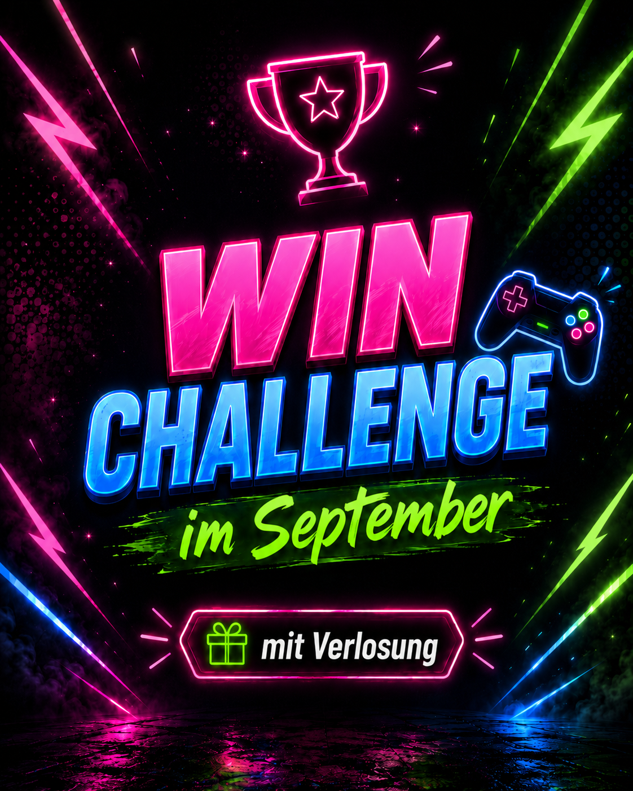

WIN-CHALLENGEIch muss gewinnen, ihr könnt abräumen.
Bei der Win-Challenge warten mehrere völlig vernünftige Herausforderungen auf mich: eine Führerscheinprüfung zu 100 % falsch beantworten, Mortuary Assistant mit nur einer Leiche gewinnen, in Chained Together gemeinsam 200 Meter schaffen und bei Fall Guys das Finale erreichen. Währenddessen könnt ihr durch Schätzfragen und weitere Aufgaben Lose sammeln. Am Ende wird ein Gewinner gezogen und erhält ein Game-Attack-Pulver nach Wahl.
START19.09.2026 17:00 Uhr
CHALLENGES4 Aufgaben
ORTTwitch